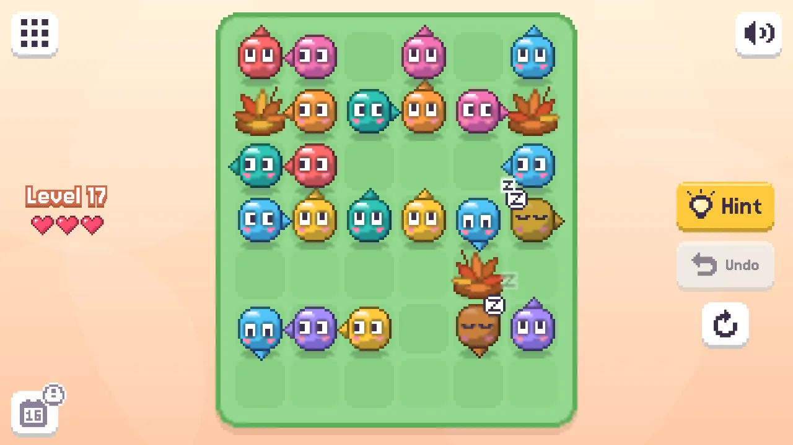
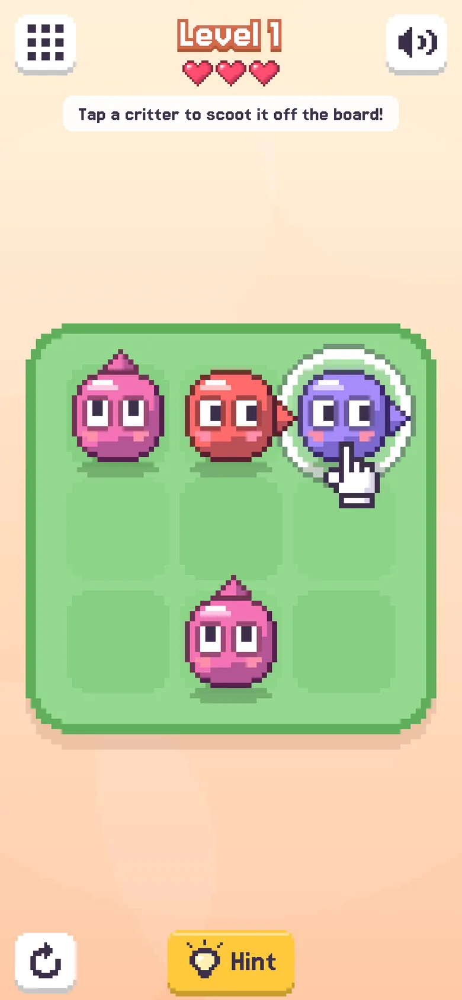
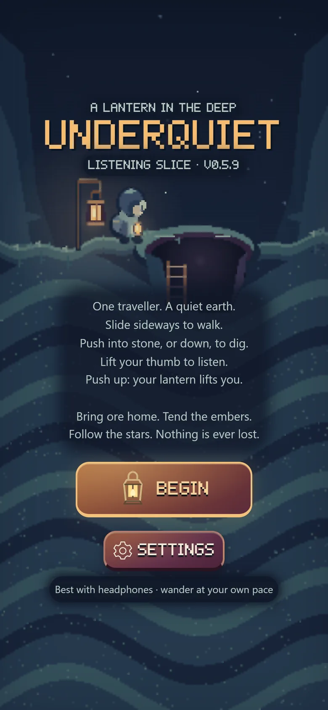
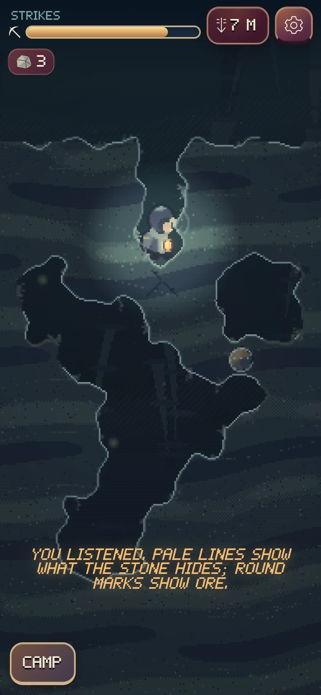
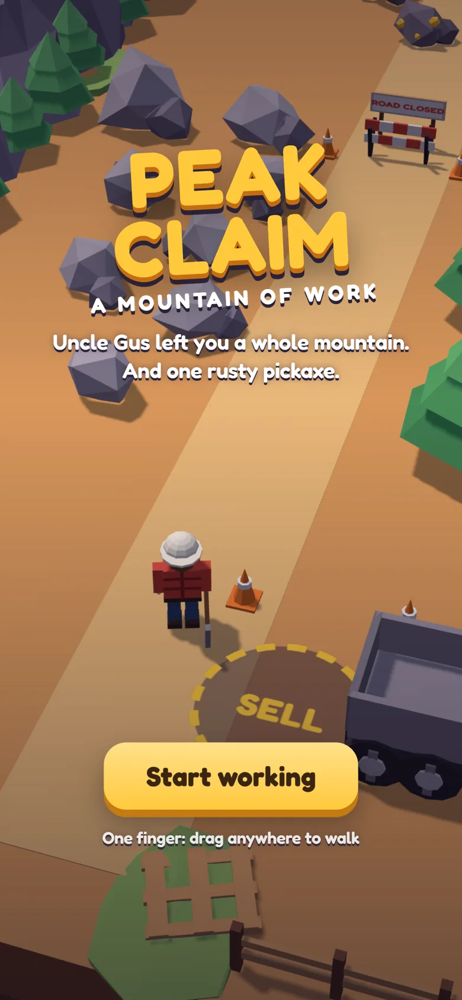
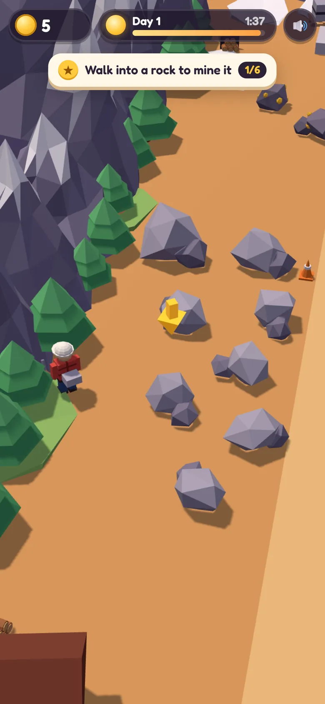

AI-native Unity developer · Yerevan, Armenia · open to remote
Three games built with AI agents.
I've shipped mobile games in Unity for five years, and for the last one I've written most of my code through AI agents. I made these three that way, in my spare time. Each one runs right here in your browser.
November 2026
Days with commits, from each game's git history
Scoot!
Tap a critter and it scoots off the board the way it faces. Bump into another and you lose a heart. Sleepy critters, leaf piles and a daily puzzle join as you go.
- Time
- 1 hourto the first playable, then 6 days of polish to a Poki-ready build
- Tech
- PixiJS v8, TypeScript and Vite. A seeded level generator with a solver, so every level can be cleared.
- AI
- Claude Code wrote the game, the solver and its tests, scripted the pixel art and wired the Poki SDK. The music loop is AI-generated (MiniMax-Music3).


Underquiet
A calm mining game about listening. Dig down with one thumb, then lift it: the rock answers, and pale contour lines show the ore hidden in the dark.
- Time
- 2 daysresearch, a design doc, four concepts and the prototype
- Tech
- Plain JavaScript and Canvas 2D in a single HTML file. Every pixel of art and every sound is made in code.
- AI
- Claude Code and Codex CLI worked in parallel from shared briefs. Codex drafted, Claude Code checked each result and built the playable slice.


Peak Claim
Your uncle left you a mountain and one rusty pickaxe. Mine it, haul the rocks to the truck, hire a crew, drive the machines and build Peak Lodge.
- Time
- 2 hoursfrom an empty repo to the full loop, at a game jam
- Tech
- three.js and Vite. Every low-poly model is built from primitives in code; the sound is synthesized.
- AI
- Built with Claude Code in one jam session: the economy and day cycle, crew and driver AI, drivable machines and the models.


How I work
Claude Code is my main tool, with Codex for parallel jobs and second opinions; I've worked with Cursor before too. I build the setup around the agents myself: skills, project rules, and MCP connections to the Unity Editor and Blender.
The agents write most of the code. I set the direction, keep the architecture clean, review what they write and playtest on a real phone.
My day job is Unity at ArmNomads, on idle games built the same way and live on Google Play and the App Store. I've also built 2D and 3D games in Cocos Creator; that work is under NDA, so it isn't shown here.